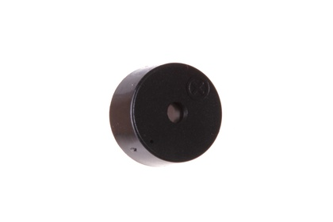
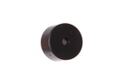
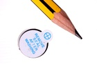
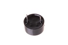

12 mm 3v Buzzer - BZ12

Summary
Name: 12 mm 3v Buzzer
ID: BUZZ-12-X-V3-01
Hex ID: BZ12
WebPage: https://github.com/oomlout/oomlout-OOMP/wiki/BUZZ-12-X-V3-01
Short URL: http://oom.lt/BZ12
Revision History: https://github.com/oomlout/oomlout-OOMP/blob/master/parts/BUZZ-12-X-V3-01/
| Type |
Size |
Color |
Description |
Index |
BUZZ
Buzzer |
12
12 mm |
X
|
V3
3v |
01
|
Images



About
This part is awaiting a description.
Specifications
| Info |
Value |
| Type |
Buzzer |
| Size |
12 mm |
| Description |
3v |
Extra Details
Spotted a mistake, want to add more? Let us know oomp@oomlout.com
All images and resources are licensed [CC BY-SA] unless otherwise stated (ie. the datasheets)